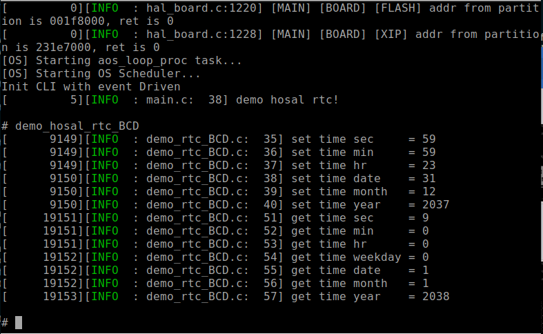

rtc BCD格式
总览
本示例主要介绍rtc BCD格式的使用方法。
准备及使用步骤
- 使用步骤：
- 插入将板子的USB电源线；
- 编译
customer_app/periperal/demo_rtc工程并下载工程；- 打开一个串口终端窗口（波特率为2000000，用于接收和发送uart消息）。
- 串口终端输入
demo_hosal_rtc_BCD，启动rtc BCD的demo。- 此时串口会先打印设置的rtc时间，然后等待10s，会打印当前的时间，应为设置的时间加上10s

应用实例
- 示例代码
#include <stdio.h>
#include <cli.h>
#include <hosal_rtc.h>
#include <blog.h>
void demo_hosal_rtc_BCD(void) {
int ret1 = -1;
int ret2 = -1;
/* init rtc BCD format*/
hosal_rtc_dev_t rtc;
rtc.port = 0;
rtc.config.format = HOSAL_RTC_FORMAT_BCD;
hosal_rtc_init(&rtc);
/* set rtc time */
hosal_rtc_time_t time_buf;
time_buf.sec = 0x59;
time_buf.min = 0x59;
time_buf.hr = 0x23;
time_buf.date = 0x31;
time_buf.month = 0x12;
time_buf.year = 0x37;
ret1 = hosal_rtc_set_time(&rtc, &time_buf);
if (ret1 != 0) {
blog_error("set error\r\n");
}
blog_info( "set time sec = %x\r\n", time_buf.sec);
blog_info( "set time min = %x\r\n", time_buf.min);
blog_info( "set time hr = %x\r\n", time_buf.hr);
blog_info( "set time date = %x\r\n", time_buf.date);
blog_info( "set time month = %x\r\n", time_buf.month);
blog_info( "set time year = %x\r\n", time_buf.year + 0x2000);
/* clear time buf and delay 10s */
memset(&time_buf, 0, sizeof(hosal_rtc_time_t));
vTaskDelay(10000);
/* get rtc time */
ret2 = hosal_rtc_get_time(&rtc, &time_buf);
if (ret2 != 0) {
blog_error("set error\r\n");
}
blog_info( "get time sec = %x\r\n", time_buf.sec);
blog_info( "get time min = %x\r\n", time_buf.min);
blog_info( "get time hr = %x\r\n", time_buf.hr);
blog_info( "get time weekday = %x\r\n", time_buf.weekday);
blog_info( "get time date = %x\r\n", time_buf.date);
blog_info( "get time month = %x\r\n", time_buf.month);
blog_info( "get time year = %x\r\n", time_buf.year + 0x2000);
hosal_rtc_finalize(&rtc);
}
- 通过
hosal_rtc_dev_t定义一个rtc设备，并设置port，格式设置为BCD格式。
int ret = -1
hosal_rtc_dev_t rtc;
rtc.port = 0;
rtc.config.format =HOSAL_RTC_FORMAT_BCD;
- 调用
hosal_rtc_init初始化rtc。
ret = hosal_rtc_init(&rtc);
if (ret != 0) {
blog_error("init rtc error\r\n");
}
- 通过
hosal_rtc_set_time来设置rtc时间，此时按照BCD格式设置。
int ret = -1;
hosal_rtc_time_t time1;
time1.sec = 0x59;
time1.min = 0x59;
time1.hr = 0x23;
time1.data = 0x31;
time1.month = 0x12;
time1.year = 0x37;
ret = hosal_rtc_set_time(&rtc, &time1);
if (ret != 0) {
blog_error("set rtc time error\r\n");
}
- 通过
hosal_rtc_get_time接口来获取rtc时间, 注意获取到的时间也是BCD格式的
hosal_rtc_time_t time2;
memset(&time, 0, sizeof(hosal_rtc_time_t));
ret = hosal_rtc_get_time(&rtc, &time2);
if(ret != 0) {
blog_error("get rtc time error\r\n");
}
blog_info(" get time sec = %x\r\n", time2.sec);
blog_info(" get time min = %x\r\n", time2.min);
blog_info(" get time hr = %x\r\n", time2.hr);
blog_info(" get time weekday = %x\r\n", time2.weekday);
blog_info(" get time data = %x\r\n", time2.data);
blog_info(" get time month = %x\r\n", time2.month);
blog_info(" get time year = %x\r\n", time2.year);
- 通过
hosal_rtc_finalize结束此rtc的使用
hosal_rtc_finalize(&rtc);